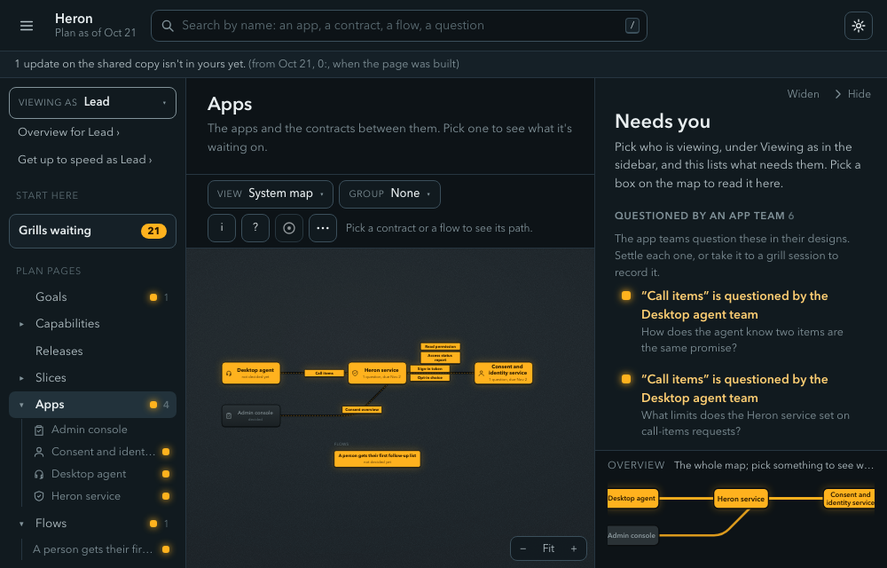
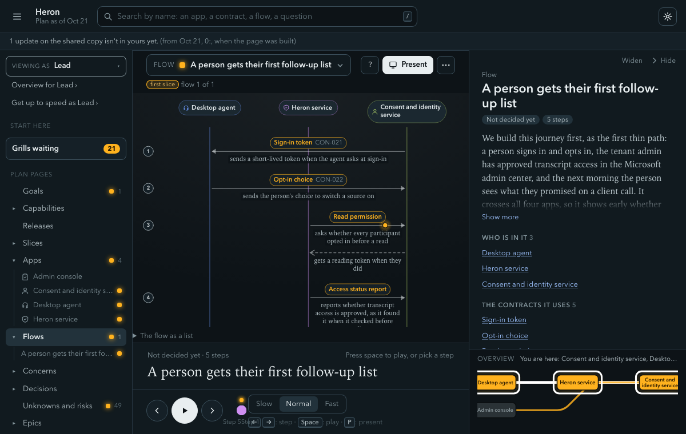

Hand-offs and slices
A plan for several apps is mostly a map of hand-offs between apps, and between people. Who sends what to whom, what comes back, and what happens when it doesn't. Vela treats those joins as items with their own rules, and builds the product as thin end-to-end paths first.
A contract lists every answer
A contract is the agreed interface between two apps: what crosses, who consumes it, a change policy, and a case table of every way the provider can answer.
In the Heron service's Call items contract, "nothing new" and "a call that couldn't be read" are separate answers from "new items." A consumer who read an empty list as "all clear" would be wrong when a call went unread. The table forces the question "and when it can't?" before anyone builds. It is the empty-versus-missing failure from the problem, written where both teams can see it.
The Call items case table, word for word
| Case | When | Status | Answer | Emits | Sets |
|---|---|---|---|---|---|
| new_items | | ok | redacted items from calls since the last sync, each with the call's name and date | | |
| nothing_new | | ok | an empty answer, because nothing has come in since the last sync | | |
| call_not_read | | ok | the name and date of a client call that couldn't be read, with no content, so the agent can show it as not checked | | |
| not_signed_in | | error | refused, because there is no valid token | | |Where this is stated and enforced
Stated in Fact bullets. Enforced by W380 for a missing case table and W386 in the handoff list. Pinned by test_cases.py and test_handoff_warnings.py.
Flows are journeys across the joins
A flow lists who sends what to whom over which contract. Step through the demo plan's first one, or click an app to jump to its first step.
Sign in
The consent service sends a short-lived token when the desktop agent signs in.
Opt in
The agent sends the person's choice to switch a source on. Nothing is read until the consent service has recorded it.
Ask whether it may read
The Heron service and the consent service settle read permission, over the Read permission contract.
Report access status
The Heron service sends the consent service its access status report.
Hand over the call items
The Heron service sends the agent the call items, over the contract with the four answers above, so the agent can show a call as "not checked" instead of "all clear."
Beyond the first flow
Not one of the five steps. The admin console relies on the consent overview, so the join is on the map.
The check holds each pair of apps to the contract it names (E350). Two apps named with no contract draw a warning (W374), because "who hands what to whom" isn't recorded.
The dashboard's version of this map


Where this is stated and enforced
Stated in Flow steps. Enforced by E350, E351, W351 and W374 (rules.py). Pinned by test_capture_rules.py, test_flow_ends.py.
The flow check finds gaps before anyone builds
When a flow is drawn as a strict sequence diagram and its contracts have case tables, vela check-slice can prove things about the plan: every answer a provider can give is handled, every event has a consumer, nothing is left half done. It reads the plan, never the code, and runs in seconds.
It is strict about input. A line it can't read makes the slice "not fully checked," which blocks deciding it until the lead overrides with a reason and an end date. The demo plan's first slice is there ("SLC-005 ... not fully checked"), because its flow isn't drawn strictly yet. The tool says what it couldn't check.
Where this is stated and enforced
Stated in Flow check and the grill skill's gate step (grill). Enforced by vela check-slice (flowcheck/). Pinned by test_flowcheck.py, test_flowcheck_changed.py.
Slices: thin and end to end, first
Most plans are built a layer at a time: each team finishes its app, the apps meet at the end, and contract surprises arrive when they cost most. A slice is one thin piece of the product built end to end, so it can ship and be tried alone. The tracer is the first: one path through every app and contract it needs, built first and kept. The name comes from The Pragmatic Programmer [4], the one-system version is Cockburn's "walking skeleton" [5], and putting the tracer first is vela's own design choice, not a measured result.
- The riskiest joins get proved early. If the consent check or the call-items contract is wrong, the tracer shows it in the first weeks.
- Every team gets a first story that matters. Story one is the team's piece of the tracer. A story that is only a layer (a gate, a schema, a screen with nothing behind it) is flagged and folded into the slice that needs it.
- Slices are the unit of done, and a release is a milestone. "Nothing waits for a release; a slice switches on when its journey passes."
The demo plan's tracer (SLC-005) walks the flow above: it cuts across three apps and uses each of their contracts once. It does very little, but it runs.
Not ready? Say so. And the gap the check points at
Sometimes a piece isn't ready, such as transcripts waiting on a legal ruling. The slice page has a ## Not in this slice section with one bullet and reason per piece. Nothing stops the session.
Vela also warns when the tracer passes through an app that release one delivers nothing of (W347). On October 21, 2026, it gave the demo plan that warning eight times. The tool points at the gap and doesn't hide it.
Where this is stated and enforced
Stated in Slices, Releases and the explainer tracer-bullets.html. Enforced by W345, W347, W348 (rules.py) and the breakdown skill. Pinned by test_slices.py and test_tracer.py.
Two roles, one rule
The solution lead owns the whole: boundaries, contracts, flows, edge behavior and slices. "Solution design is mine; app design is theirs." They run the sessions, decide in grills, and write the handoff.
The team lead, a senior engineer, takes one app: its page, contracts, allocated requirements, epics, slices and the open questions blocking any of them. They design and plan inside it with /vela:design, /vela:breakdown and /vela:tickets.
Neither reads the other's whole world. Access decides role: an owner works in the vault's git clone, and a reader works in a published copy with no git, whose decisions stay pending until an owner clears them. Vela never sends anything; people move the files.
Where this is stated and enforced
Stated in Roles and published copies, Pending approval and Handoff. Enforced by vela role, which reads access and never a title. Pinned by test_roles.py and test_pending.py.
Handoff, challenge and answer
The hand-off between people is recorded, and so is disagreement. A challenge is how a team lead disagrees without it being a complaint filed somewhere. Step through one.
The lead decides the app
The solution lead decides the app and its contracts in a grill.
The lead hands it over
The lead names the team lead who takes it, and vela handoff records everything accepted with a fingerprint of each item's text. Re-rendering a page changes no fingerprint.
The team designs inside
The team lead designs inside the app and traces every component to the list.
The team lead challenges
/vela:challenge quotes their words and writes one open question they own that blocks the item, plus a **Dissent:** line. It leaves the item's state and text alone.
The check stays red
The check fails (E316) until the solution lead answers, on purpose: a challenge shouldn't merge while main still says "decided" with an open blocker.
The lead answers
The lead answers on the challenge's own branch, either by deciding in a grill or by setting the item back. Close pushes to that branch and doesn't open a second pull request.
Everyone sees what changed
vela handoff verify shows exactly which accepted item changed.
An owner whose item was decided on their behalf has the same two answers: a Confirmed by: line, or a challenge. The dashboard's "Needs you" list shows each role up to five things to act on. Vela's design choice is that frequent stepping in by the solution lead is a capacity problem to escalate, not absorb.
Where this is stated and enforced
Stated in the challenge skill, ANSWER-A-CHALLENGE.md, Handoff and Overrides. Enforced by vela handoff verify, E316, E322 and W324. Pinned by test_handoff.py, test_challenge.py, test_answer.py, test_override.py, test_needsyou.py.
The plan records decisions and their reasons, not runtime state: "we switched the slice on, here's who and why" belongs in it, "the flag is on right now" belongs to the flag tool.